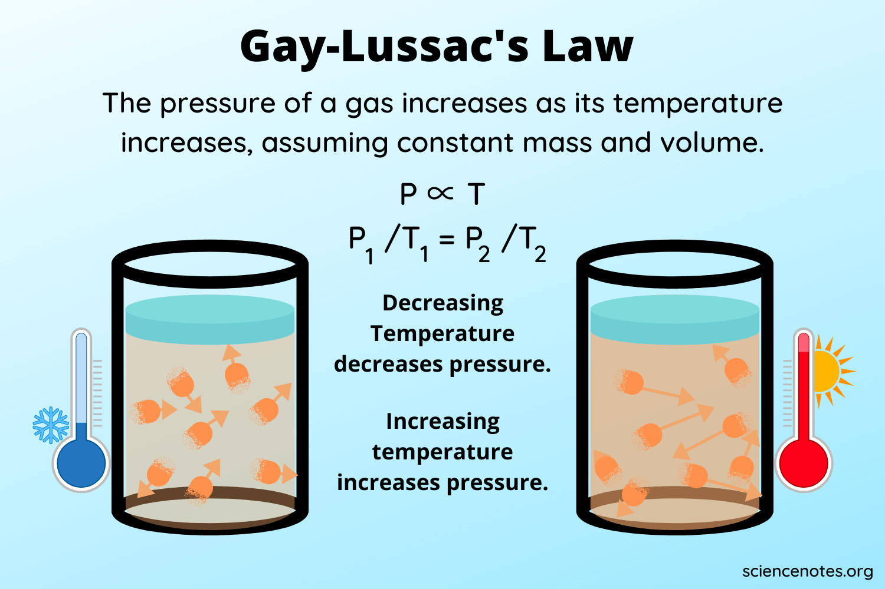

Gay-Lussac's Law
 Gay-Lussac's Law states that the pressure of a given mass of gas varies directly with the absolute temperature of the gas, when the volume is kept constant. Gay-Lussac's Law is very similar to Charles's Law, with the only difference being the type of container. Whereas the container in a Charles's Law experiment is flexible, it is rigid in a Gay-Lussac's Law experiment. In other words, as the pressure of gas increases, its temperature increases. Assuming constant mass and Volume.History and background
The French chemist Joseph Gay-Lussac (1778-1850) discovered the relationship between the pressure of a gas and its absolute temperature.Formula

Example problem:
A gas has a pressure of 14.7 psi at a temperature of 225k, what is the new temperature if the pressure rises to 16 psiGiven:
p1= 14.7psi
p2= 16psi
t1=225k
t2= ?
Formula:
p1/t1 = p2/t2Solution:
(14.7psi)/(225k) = (16psi)/(x)
(14.7psi)(x) = (16psi)(225k)
14.7x = 3600
3600/14.7psi = 244.9k
t2 = 244.9k